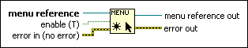

Enable Menu Tracking Function
Owning Palette: Menu Functions
Requires: Base Development System
Enables or disables tracking of menu bar selections.
If you use the Get Menu Selection function to block a menu, you must use this function to enable the menu.
(Real-Time Module) You cannot use this function in VIs that run on RT targets.

 Add to the block diagram Add to the block diagram |
 Find on the palette Find on the palette |